BE READY FOR THE FIGHT
(The Pioneers and Their Idols)
Where life is not worth much, death has its price
Sergio LeoneThe Pioneer Organization was a movement for children in Communist Romania, founded on April 30, 1949. To have a future in the system, the students were practically obliged to join the organization while in the second grade and they remained pioneers throughout the seventh - eighth grades.
In 1956, being 12 years old, I learned somehow to play a pioneer's trumpet and I was chosen to be part of the selected group of pioneer trumpeters and drummers who opened the official parades, which commemorated official events like the liberation of Romania or the commemoration of the Russian October revolution. A Romanian stamp showing this honorable task is presented below, on the left side. In later years, three to five thousand Pioneers would be brought to Bucharest (7,000 in 1987), training rigorously every day for a month (two hours in the morning and two in the evening) before their moment in the spotlight. Source
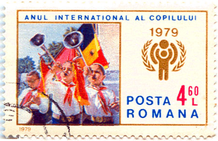
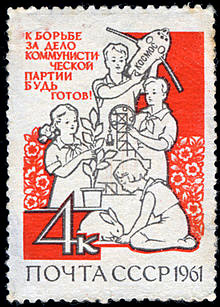
In the beginning years members wore bigger, fully red scarf of Soviet type. Under Ceausescu's national-communism these were later replaced by small triangular red scarf, with a red-gold-blue strip outside border (red-gold-blue are the traditional colors of the Romanian national flag). They also had pioneer uniforms that they wore on certain days instead of their regular school uniforms. When in school uniform, students had to wear their pioneer scarves. The organization's responsibilities paralleled those of the Union of Workers (later Communist) Youth (UTM - UTC) and involved in political (preparing children to become party members) and propagandistic training. Until 1966 the Pioneers functioned as an integral part of the UTM, but thereafter it was under the direct control of the Central Committee of the Romanian Communist Party. 70 percent of the 9-14 age group, or approximately 1.3 million young people, belonged to the Pioneers in 1981.
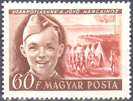
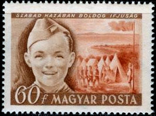
In Hungary, the Association of Young Pioneers was formed for youngsters in elementary school. Membership was open to children from six to fourteen years of age. The organization explained to children the basic tenets of the Marxist-Leninist world view. Joining the Young Pioneers was a matter of course for most youngsters in elementary school. Most meetings took place in classrooms of primary schools. Source.
The above stamp, on the left, is one of the rare errors of the Hungarian post-WW2 philately. It was allegedly falsely labeled "Our Reserves for Future Battles", and it was rapidly replaced by "In a Free Motherland Happy Youth Right On" (the stamp on the right). Obviously, the disclosure in a too overt manner of the real intentions of the pioneers' organization was found disturbing, which seemed to justifiy the effort for replacement of the stamp. As in all such cases, replacement did nothing but to point out what was meant to be hidden.
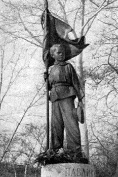
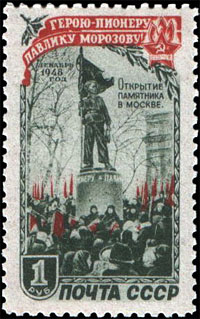
The most famous pioneer behind the Iron Curtain was Pavlik Morozov (November 14, 1918 - September 3, 1932), a Soviet youth praised by the Soviet press as a hero and a martyr. His story, dated to 1932, is that of a 13-year old boy who denounced his father to the authorities and was in turn killed by his family. His story was a subject of reading, songs, plays, a symphonic poem, a full-length opera and six biographies. The cult had a huge impact on the "moral" norms imposed on generations of children. There is very little original evidence related to the story, much of it hearsay provided by second-hand witnesses. According to modern research, the story (denunciation, trial) is most likely false, although Pavlik was a real child who was killed. Morozov's story was the basis of Bezhin Meadow, an unreleased film from 1937 that was directed by Sergei Eisenstein. Source
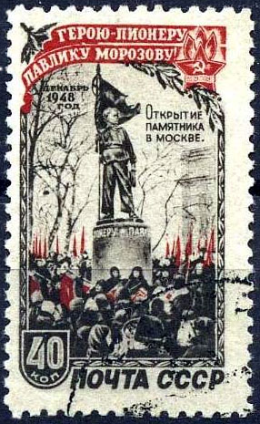
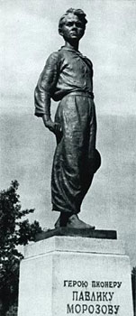
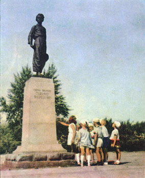
Since the dissolution of the Soviet Union evidence has emerged of the fabrication of the Pavlik Morozov legend. Pavlik was not a Pioneer when he was killed, and there were no pioneers organization in his village. According to the Soviet sources, Pavlik's grandfather was hold responsible for his murder; according to newer research, the grandfather was heartbroken about the death of Pavlik, organized the search when the boy went missing, and maintained his innocence during the trial. Nevertheless over 20 members of his family were executed or deported to the Gulag. While not saying it outright, the former dissident writer Druzhnikov hints that Pavlik was killed by a GPU officer, whom Druzhnikov met while doing his research, and that the whole story was fabricated by the GPU for propaganda purposes.
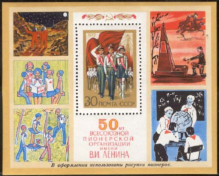
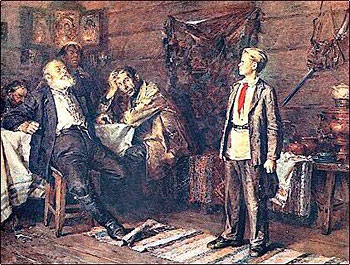
According to the most recent research, Gerasimovka, the village of the drama, was described in the Soviet press as a "kulak nest" (kulak = wealthy peasant) because all villagers refused to join the kolkhoz, a state-controlled collective farm, during the forced collectivization. Pavlik informed on neighbors when they did something not conform to the dogma, including on his own father, who left the family for another woman. Pavlik was not a Pioneer, although he wanted to be one. There is no evidence that the family was involved in the murder of the boy, which was probably a work of other teenagers with whom Pavlik had a squabble over a gun.
The whole story is a good illustration of the times lived by the grown-ups and by their children alike during that long and troubled communist era in Central and Eastern Europe. Just that this era is not finished yet worldwide. As a proof, a recent Morozov-like story from the communist North Korea follows:
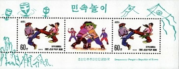
North Korea. 1995. Children's Folk Games.Shin said he didn't understand family in the normal sense. He was born inside Camp 14, the notorious labor camp for political dissidents just south of the North Korean capital, Pyongyang. He knew that he would be punished if his mother and brother tried to escape. So to him, there was no choice but to tell the guards of their plan and avoid certain execution. "I was 14 years old when my mother and brother were publically executed, but I felt no emotion," Shin said. "Rather, I felt relieved that I was not the one that was tied to the wooden stake of the executing, so that was what I felt at the time... I felt my mom and brother broke the prison camp rules so that they deserved what they were going through at that moment." He watched as his mother was hanged and his brother was killed by a firing squad. It was two years after escaping to South Korea (being aged then 22) when he finally felt any guilt. Source.
Created: 04/11/2012. Revised: 1/12/202412
Copyright © 2012 - 2024 by Victor Manta, Switzerland/USA.
All rights reserved worldwide.